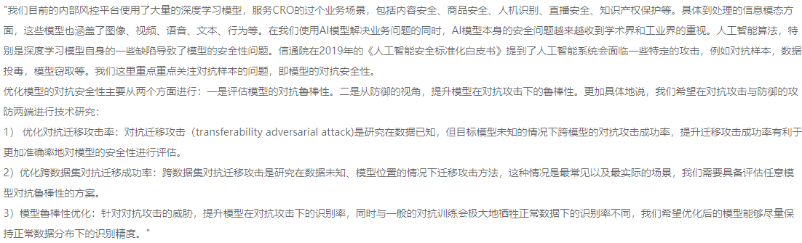
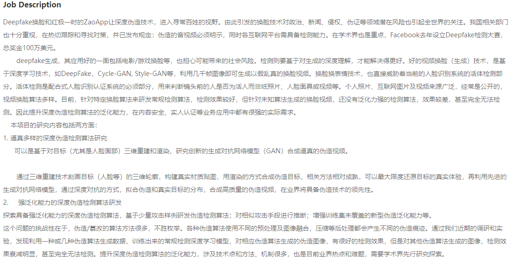
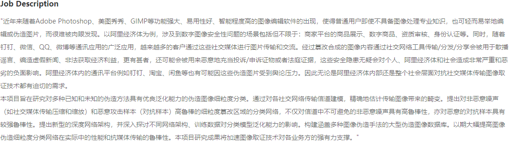

Research fields
Research fields#
Conference workshops
Alibaba
-
难点：1) 针对图形和文字，是可以用于训练的有监督信号较少，需要整合自监督和跨域监督来得到可靠的特征。
针对文字信息，特别是英文信息，将文字的位置信息融合到特征里来得到具有较强鉴别信息的特征。
因此，具体研究内容和方法包括一下三个方面如何有效的利用自监督算法在商标图像和商标文字图像进行预训练。
如何利用已有的初始化模型在超大规模商标图像上进行跨域训练。
设计有效的backbone融合文字的表观信息和文字位置，商标文字图像通过该网络可以得到有效的鉴别特征。
-

Deepfake image/video generation and detection

-

阿里天池安全AI挑战 图像纂改